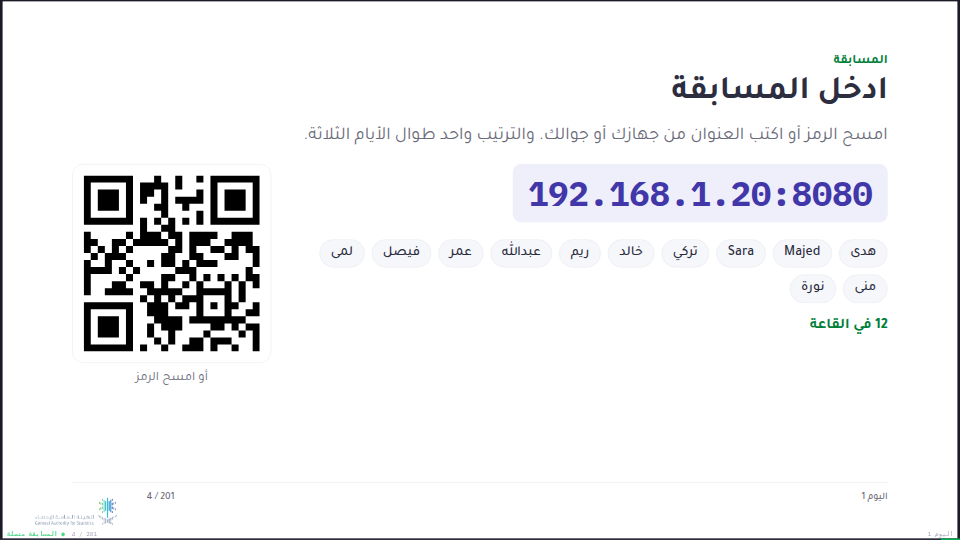
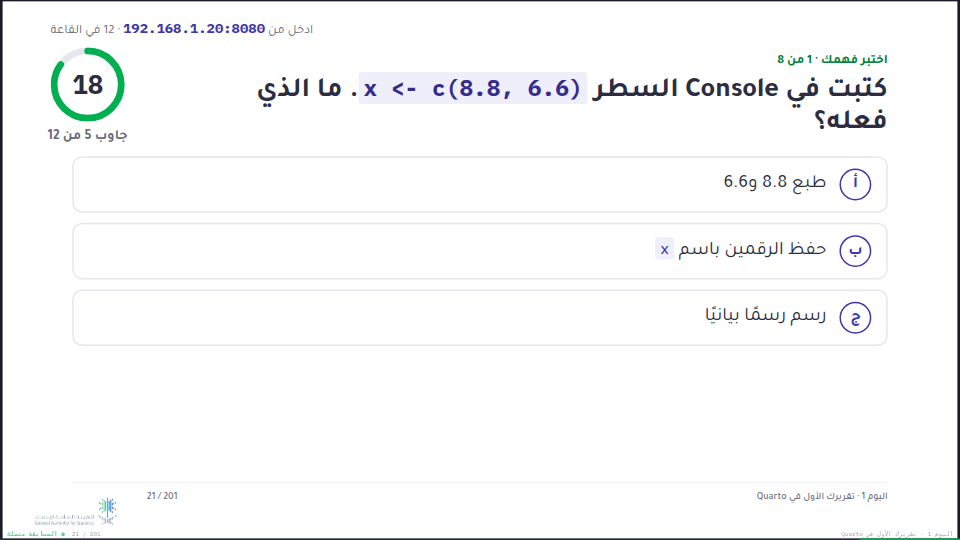
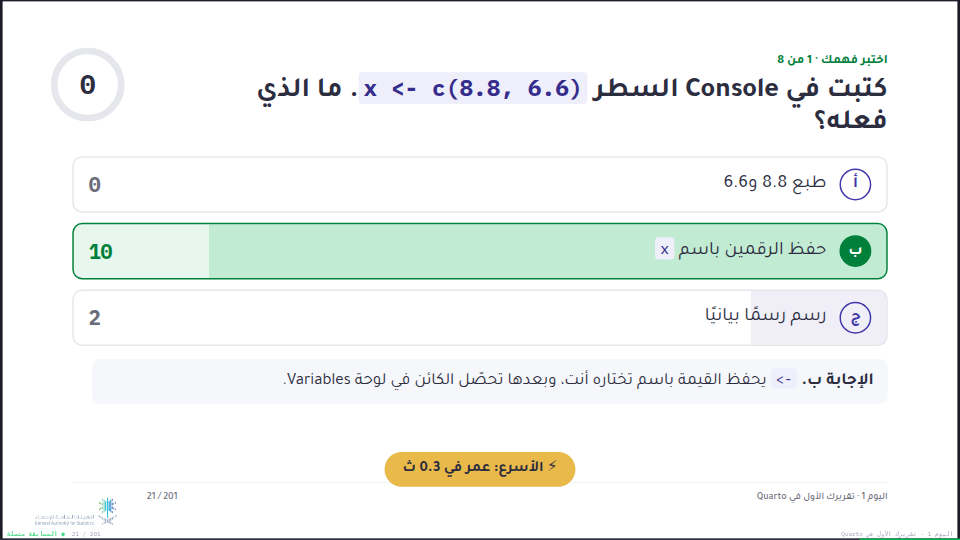
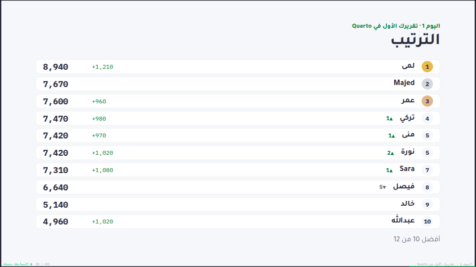
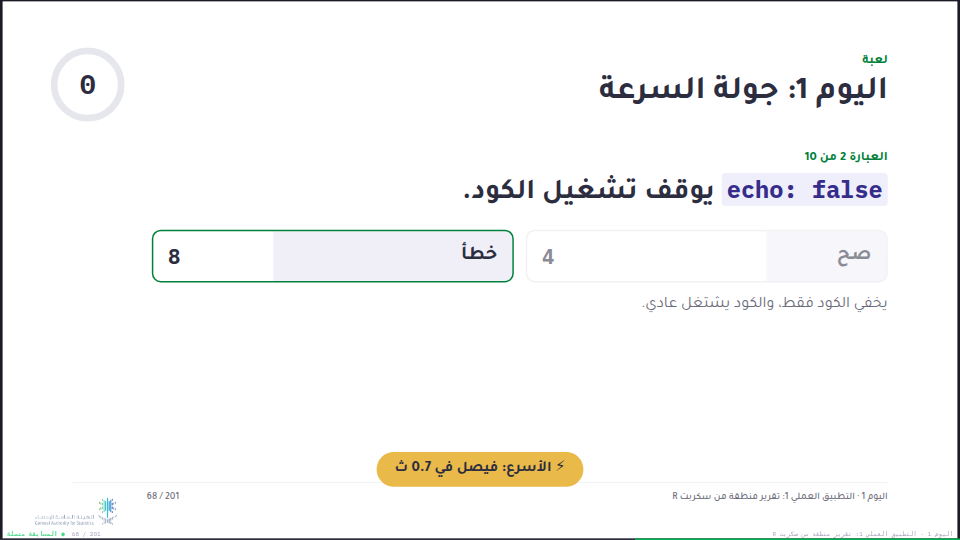
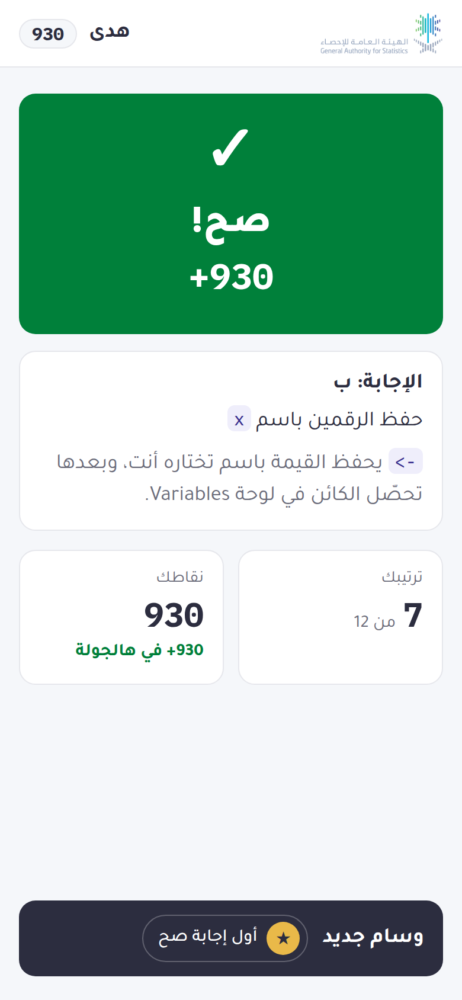

Quarto خطوة بخطوة
تقاريرك وعروضك تطلع مباشرة من كود R. وكل ميزة نشرحها بمثال يُبنى أمامك: الملف على اليسار يكبر خطوة خطوة، وعلى اليمين تشوف وش يطلّع منه Quarto مع كل خطوة.
ابدأ من هناكيف يشتغل Quarto
ملفك يدخل، وknitr يشغّل كود R، وPandoc يكتب الصفحة. خمس خطوات، كل واحدة منها مأخوذة من توليد (render) حقيقي.
خريطة الدورةثلاثة أيام، تسع جلسات، وثلاثة تطبيقات عملية
كل يوم فيه ثلاث جلسات، وبعدها تطبيق عملي مدته 45 دقيقة ينتهي باختبار الإنجاز.
تقرير واحد من ملف فارغ
Markdown وYAML، وخيارات الـ chunk، والأرقام داخل النص، والأشكال والجداول، والإحالات، والتخطيط.
تقرير واحد لكل المناطق وبكل الصيغ
Word وPDF من ملف واحد، والمُعامِلات، و13 منطقة من سكربت واحد، والهوية المؤسسية، والعربية.
التحليل نفسه في عرض تقديمي
شرائح Revealjs، وتخطيطها، وإيقاع العرض، والكود على الشريحة، والحركة، والهوية المؤسسية، ومشاركة العرض.
للمدرّب · المسابقةاختبارات الدورة مباشرة في العرض، مع لوحة ترتيب
كل اختبار في العرض يصير مسابقة مباشرة: تفتح السؤال بـ →، والوقت يمشي على كل الشاشات، وعند الكشف يظهر كيف جاوبت القاعة ومن الأسرع. وبعد كل اختبار يطلع الترتيب على نفس الشريحة، وجولات السرعة تمشي لحالها. والترتيب واحد طوال الأيام الثلاثة. وكل هذا يشتغل من جهازك بـ Python وبس، وما يحتاج إنترنت.






طريقة التشغيل
- نزّل الدورة كاملة (الزر تحت)، وفك ضغطها على الجهاز اللي تعرض منه.
- داخل مجلد الدورة، اضغط مرتين على
start-course.command(على Mac) أوstart-course.bat(على Windows)، أو شغّل فيهpython3 room/room.py. وخلّ نافذته الصغيرة مفتوحة طول الشرح. ولو فتحت الملفات مباشرة من المجلد، الأمثلة المتحركة تطلع فارغة، فشغّل الدورة دايمًا بهذه الطريقة. - العرض يفتح على
http://localhost:8080/deck، واعرض مثل العادة. كل يوم يبدأ بشريحة الدخول: المشاركون يمسحون الرمز وهم على نفس الواي فاي اللي عليه جهازك. ولو الشبكة تفصل الأجهزة عن بعض، شارك نقطة اتصال جوالك. - في شريحة السؤال: → يفتح السؤال، و→ مرة ثانية يكشف الإجابة قبل ما يخلص الوقت، وبعدها → ينقلك للي بعده. وبعد آخر سؤال في الاختبار، → يعرض الترتيب.
- أعطِ 500 نقطة لاجتياز اختبار الإنجاز، و300 لعرض الشغل أمام القاعة، من
http://localhost:8080/host.
الإجابة الصح لها 500 نقطة، وحتى 500 زيادة حسب السرعة. وكل إجابة صح متتالية بعد الأولى تضيف 50، بحد أقصى 250.
النقاط تنحفظ في room/room-state.json: سكّر المسابقة آخر اليوم وشغّلها بكرة، وتكمل من مكانك. والأسماء ما تطلع من جهازك. ولو فتحت العرض من أي مكان ثاني، يشتغل عرضًا عاديًا.
الأمثلة مبنية بـ HyperFrames، وتشتغل في المتصفح بدون ما تحمّل أي شيء من الإنترنت. يعني الدورة كلها تشتغل حتى على جهاز ما فيه إنترنت.